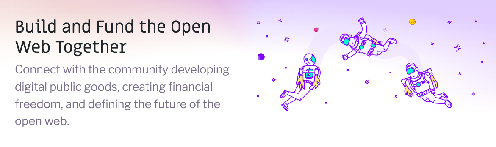
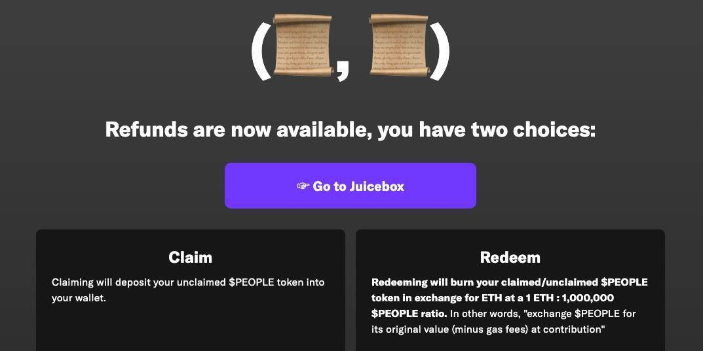

- 00 开篇词 Web 3.0：一场已经开启的互联网革命！.md.html
- 01 我们为什么需要Web 3.0？.md.html
- 02 公链：从计算分层开始.md.html
- 03 继续分层：身份和激励.md.html
- 04 NFT（一）：数据确权及其文化和商业价值的发现.md.html
- 05 NFT（二）：数据确权及其文化和商业价值的发现.md.html
- 06 边玩边赚能给游戏和电商带来新的商业模式吗？.md.html
- 07 Web 3.0社交和创作者经济.md.html
- 08 区块链：从底层重构金融.md.html
- 09 DeFi：“三无模式”开辟金融新蓝海.md.html
- 10 关于DAO的七个真相和两个趋势（一）.md.html
- 11 关于DAO的七个真相和两个趋势（二）.md.html
- 12 DeFi的空中楼阁能盖多高？.md.html
- 13 代码和法律，哪个更强？.md.html
- 14 Web 3.0正在形成的合力.md.html
- 特别放送 Yuga Labs：Web 3.0迪士尼的谛造之路.md.html
- 结束语 Web 3.0时代，你的创造和收获！.md.html
- 捐赠
10 关于DAO的七个真相和两个趋势（一）
你好，我是郭大治。今天，我们开启一个新的话题：DAO。
你一定也在不同的场合听说过DAO（Decentralized Autonomous Organization，去中心化自治组织），作为一种新型的组织形态，DAO有望取代公司制，成为Web 3.0最有效率，也是最主要的组织形态。
但除了这一点，我们也需要搞清楚，DAO的本质是什么？它在组织资源方面具有哪些优势？以及这些优势的发挥需要哪些前提条件？
在接下来的两节课里，我就通过DAO的七个真相来给你一一解释以上这些问题，然后我会结合这些规律，来对DAO的发展趋势进行预测。要知道，DAO是一个强调实践且参与门槛比较低的领域，希望通过接下来的内容，你可以找到几个你感兴趣的DAO。
真相一：DAO不只有“投票表决”，还要有“代码自治”和“财库保障”
说起DAO，也就是去中心化自治组织，我们往往想到的就是“能够充分自由地表达自己的意愿”，就是“投票表决”。但所谓“去中心化”，实际上指的是一个组织里面不存在一个制定规则的权威，组织内的每一个成员都有机会参与社区决策。由此一来，“群策群力”可能就会凝聚成更大的智慧，为社区的发展提供指引。
对于一个去中心化的组织来说，在一个天然缺乏“核心权威”的组织内，基本的状态就是“各行其是、互不干扰”，在这种情况下，“自由表达”完全没有问题，但是我们最需要的其实是一种协调机制，一种不通过“中心化的权威”，但还能将组织内的各种资源进行协调，并实现组织目标的协调机制。
事实上，探索“协调机制”的历史，贯穿了人类文明的整个进程，但大部分的成果都体现在了“中心化”的模式上，很多种以“民主决策”为初衷的经济或者社会层面的尝试，往往不得不在“中心化模式”的方向上找到最终的出口。
出现这一现象的主要原因在于，我们需要协作的环节太多，以及缺乏低成本的、可信的关于投入工作量的计量和检验的方式。因此我们最终不得不还是回到“中心化”的老路上，依靠“中心化”的权威，去保证集体决策的执行效果和执行质量。
直到以区块链为代表的分布式账本技术（DLT）的出现，才从技术上为解决“协调问题”提供了新的方案，那就是用智能合约代替人来执行和实施集体决策，这样在执行的环节上，就可以最大限度地减少对人的依赖，集体决策不受干扰的执行概率也就大大提升了。
所以，从这个角度上来说，我们用“去中心化自动执行组织”或者“去中心化代码自治组织”来形容DAO，可能就更贴切，这也是为什么DAO的概念早就出现，但却要等到区块链技术出现之后，才能获得突破而走向实践的主要原因。
以太坊创始人维塔利克·布特林（Vitalik Buterin）早在2015年提出DAO的概念的时候，就指出“判断一个DAO的主要标准在于是否拥有内部资本，是自治为主还是人治为主”，Vitalik还认为，DAO一定是以“自治”为主，“人治”为辅，否则，依赖“人治”运行的组织只能算成是DO，去中心化组织，而非DAO。
而对于DAO来说，最高形式就是完全不依赖于人的参与的AI。由此可见，“万物皆可DAO”并不是没有可能，但对于DAO来说，“代码自治”和“财库保证”才是DAO的两大支柱。
真相二：DAO的核心诉求不是自治，而是功能定位
DAO定位于组织形态创新，但组织形态不能独立于组织目标和组织功能而存在，通俗地讲就是，DAO不是为了自治而存在，而是为了实现一定的功能存在。
DAO的功能可以是纯粹的商业目标，比如投资或者众筹；也可以是非营利性质，比如捐赠或者单纯的社区协调；或者就是简单的一次活动，比如通过法律的手段，让维基百科的创始人阿桑奇（Assange）重获自由；也可能是一件持续多年的宏大的工程，比如在现实世界建设一座城市，可供人类居住和生活的CityDAO。
但总而言之，DAO的设立首先要有一个明确的目标，其次才是通过“代码自治”的形式，围绕这个目标进行组织和协调。所以说，没有组织目标，也就无从谈起DAO，为了“自治”而设立的DAO也没有存在的价值。
这里，我们可以来看几个例子。
首先是 Gitcoin，这是一个以技术开发资助为主要目标的非盈利性质的DAO，基于Gitcoin，走出了MakerDAO、Uniswap、Aave、Chainlink以及Bankless等知名项目。并且，由于为以太坊生态的发展和繁荣做出了不可忽视的贡献，Gitcoin因此也被称为“以太坊军火库”。

顺着Gitcoin，我们接着来看 Bankless，这是一个源于媒体，但已经扩展成为社区型协作组织的DAO。基于Bankless DAO，我们不仅可以进行创作，也可以通过行研（行业研究）、翻译、开发或咨询等形式对外提供服务，还可以发起各种项目。在创立两年之后，Bankless也已经成为了目前为止虚拟世界里社区规模最大的协作型DAO。
但是，也有与以上两个DAO的发展不太一样的案例。2021年11月11日，有人在网上关注到一则关于拍卖的消息，这次拍卖会由国际知名拍卖行苏富比组织，拍卖标的是仅存12份的美国《宪法》（第一版）的一个副本。
于是，来自加密社区的几个小伙伴决定临时成立一个 ConstitutionDAO，并通过这个社区组织发起捐款、筹集资金，来参与《宪法》（副本）的拍卖。然后，ConstitutionDAO在4天之内，就通过大约18000人募集到了价值4500万美金的款项，而且还获得了“首富”马斯克和以太坊创始人维塔利克的支持和参与，筹款金额已经是当时起拍价格的两倍。
而且，ConstitutionDAO在募集资金的时候，还发行了People代币作为所有用户捐赠的凭证，并申明持有People并不代表拥有《宪法》（副本）的某一部分，而是拥有在拍得《宪法》（副本）之后，对于其展出形式进行表决时的投票权，也就是拥有和大家一起决定拍卖所得《宪法》（副本）的展览和使用形式的权利。同时明确，如果竞拍失败了，所有参与人员可以凭借持有的People获得退款。
从DAO的角度来看，ConstitutionDAO的设立是成功的，不过在最后的竞拍中，他们失败了，有人出价更高而获得了《宪法》副本。但ConstitutionDAO的故事，并没有因为竞拍失败而画上句号，而是以一种意想不到的方式往下继续。
在竞拍失败后，社区内首先出现了“用这笔资金干点别的事情”的讨论，但经过一段时间沉淀之后，ConstitutionDAO还是按照事先的约定，启动了退款流程。不过，退款流程启动之后，又有一个新的问题浮出水面，那就是以太坊高昂的Gas费，使得很多账户的余额并不足以支付申请退款所需的Gas费。

据统计，ConstittionDAO筹集4500万美金的时候，就消耗了大约89万美金的Gas费，如果所筹款项全部退回的话，显然需要的Gas费也不在少数。这样，启动退款流程之后，大约还有一半的款项保留在筹款地址，也就意味着还有将近一半的People代币处于流通状态。
由此可见，ConstitutionDAO参与竞拍的结果，并不影响DAO作为一种新型组织形式而展现出来的优势，ConstitutionDAO从募集资金到参与竞拍，再到按照约定退款，都实现了传统组织方式无法实现的效率和标准。
所以，这些案例其实都在说明一件事，那就是DAO是一种非常灵活的组织形态，它可以适用于从盈利性质到非盈利性质，从长期运营到短期运营等各种场景。但我们也要清楚，DAO的设立前提，需要有一个明确的功能设定。
真相三：DAO不看出身看行动
好了，现在我们知道，DAO作为一种组织形态和治理结构的创新，可以应用于多种场景、多种阶段。我们既可以从零开始，创造一个基于DAO运营的组织，又可以从传统的中心化运营方式转型成为DAO，真可谓“万物皆可DAO”。
但是，对于一个DAO来说，也有它自身发展的规律，采用一个DAO的名字并不意味着成功的开始，而是需要在所属的行业或者领域内清晰地给自己定位，并要找到适合自己的运营方式，才能把DAO运营起来。下面，我们同样还是来看几个例子。
第一个是 PartyDAO，它是由一群互不相识的人，基于一个共同的兴趣临时发起成立的DAO，主要功能是众筹投资NFT。由于成立时机合适，业务模式清晰，成立之后不到一年的时间，其估值就达到了2亿美元，并获得了融资，成为估值最高的协作型DAO。
第二个是 MakerDAO，MakerDAO不仅开创了抵押借贷的先河，也推出了加密市场中，第一个加密资产抵押生成的稳定币 Dai。MakerDAO最早的运营主体是MakerDAO Foundation，并以MakerDAO Foundation为主体，发行了治理代币 MKR。
在项目运行了5年之后，MakerDAO实现了项目初期的“多资产抵押”的目标，并于2020年3月，把MakerDAO协议控制权从MakerDAO Foundation移交给了MKR持有者；2021年5月，MakerDAO Foundation将自己持有的MKR，全部转移为合约控制；2021年7月，MakerDAO创始人卢恩（Rune）正式宣布，MakerDAO已经实现了完全的去中心化。
第三个例子是 Bybit，它是全球最大的专业衍生品交易平台，2021年8月，Bybit和Peter Thiel（PayPal创建者之一）、Founders Fund（创始人基金，一家风投公司）、Pantera Capital以及Dragonfly Capital（两家专门从事加密基金的对冲基金公司），发起成立了 BitDAO，并承诺将其约一半的收入注入BitDAO财库。按照2021年交易规模计算，Bybit每年会向BitDAO捐赠近10亿美元。
BitDAO是基于 BIT代币进行社区治理的，Bybit可以通过持有BIT代币，来实现对BitDAO的影响。在BIT的分配方案中，Bybit可以直接获得60%的代币，用于“研发中心”的建设，另外还有30%的代币由财库控制，以促进生态系统建设。由于Bybit持有绝大多数的BIT，所以财库获得的BIT，实际上也是归Bybit控制的。
除此之外，Bybit还可以通过设定BitDAO的资金运用方向，来实现二者的协调运营，BitDAO也强调他们会针对早期项目、DeFi产品，特别是去中心化的衍生品交易所以及门户网站三个方向来进行投资。
截至2022年上半年底，BitDAO已经支持了4个项目：一个是聚焦GameFi的GAME 7；一个是 Layer-2 赛道的 zk-Sync，Layer-2被认为是支持去中心化衍生品高频交易的重要基础设施；一个是专门进行人才培养的 EduDAO，目前EduDAO已经和包括牛津、哈佛、清华大学在内的多家机构建立合作机制，开展人才孵化工作；还有一个是聚焦NFT投资的 PleasrDAO。
那么，我们从以上案例其实也可以看出，不管是从零开始的PartyDAO，还是获得出资承诺的BitDAO，或者是已经按照中心化形式运营，并取得显著成绩的MakerDAO，去中心化自治都可以成为他们在组织形态方面的选择，也都可以通过DAO的形式，来实现更加长期的运营。
真相四：简单优先，投资DAO率先获得发展
事实上，DAO的效率优势，主要是通过“代码自治”体现的，而代码和场景的结合，是影响DAO应用节奏的关键。所以，也正是因为投资DAO的业务模式简单，代码实现流程比较容易，所以投资DAO成为了DAO率先得到应用的领域。而且我们从历史的角度来看，DAO一开始就是起源于投资型DAO。
2016年4月30日，“The DAO”作为有史以来第一个DAO项目，就实现了主网上线。The DAO是项目名称，项目的功能就是要基于智能合约，打造一个“除了股东之外，不需要一名员工”的自动运行的风险投资机构。
通过前面的课程我们已经知道，基于智能合约，我们可以实现风险投资所需的项目筛选、信息披露、投票表决，以及投后管理等一系列活动，而The DAO上线之后的第一项业务，就是通过自己的平台为自己众筹。
不幸的是，由于合约安全的问题，The DAO众筹失败，并因此造成了以太坊历史上最严重的一次分裂，以太坊通过硬分叉“一分为二”，分成了现在的以太坊和以太经典“Ethereum Classic”，并由此在社会层面引起了“Code is the law”是否成立的大讨论。
补充：关于硬分叉和软分叉，是区块链领域经常遇到的一对概念，大体意思就是通过社区升级软件，调整软件的功能，但是又因为软件升级前后的版本之间，存在是否兼容的问题，所以分为了硬分叉和软分叉，详细内容你可以参考这里了解。
而在The DAO之后，MetaCartel Ventures DAO（MCD）延续了关于风险投资DAO的探索，并于2020年初上线。
2020年的加密行业，已经经历了DeFi Summer，各种Dapp（去中心化应用程序）和协议之间可以在功能上相互组合，进而衍生出更加复杂的产品，MCD就是在这种环境下诞生的。特别是Moloch协议的推出，使DAO的提案类型更加丰富，而且Moloch LAO（A For-Profit, Limited Liability Autonomous Organization，盈利性质的、有限责任自治主体）协议，也为整个DAO生态提供了和法律相容的制度框架。MCD就是在Moloch LAO的基础上，构建的专门针对Dapp领域的风险投资DAO。
补充：希望加入MCD的人需要提出申请，并在得到批准之后才可加入，虽然对于社区来说，这种设计限制了一部分用户的自由，但是对于具有投资属性的业务来说，满足关于合格投资者的标准才能使项目符合金融监管要求，让项目运营减少法律相关风险，这种设计也是非常必要的。
在MCD之后，PartyDAO 则是专门针对NFT进行投资的DAO。基于PartyBid的用户，可以实现两项功能。
一是可以针对OpenSea等4个平台的任意NFT项目，发起组织竞拍，你需要做的只是把NFT对应的URL地址粘贴到网页的选项框，即可发起一次“Collection”。如果标的资产是固定价格买卖，一旦筹集资金达到了固定价格的要求，参与筹集资金的任何人都可以发起合约购买NFT；如果标的资产是通过拍卖的形式出售，那么就需要多次发起合约，通过竞价的方式参与拍卖。
另外，你还可以参加其他人已经发起的“Collection”，如果竞买成功，你就可以通过Franctional，获得对应份额的Erc-20代币；如果竞拍失败，你可以在竞拍结束之后，随时发起“Claim”赎回自己的资产；如果竞拍成功，而竞拍价格低于筹集到的ETH数量，那么根据协议，你可以自动按比例分配NFT产权和退回剩余资产。
简单来说，PartyDAO基于智能合约，实现了针对NFT的商品众筹功能，一方面解决了NFT价格增长过快导致门槛过高的问题，另一方面也为广大用户提供了一个接触NFT的渠道。对于平台来说，在每个Collection成功竞拍之后收取2.5%的手续费，每个NFT通过Fractional“碎片化”之后加收2.5%的手续费，盈利模式既简单又清晰。
2022年6月，PartyDAO公布获得a16z领投的1640万美元融资，根据这项融资计算，PartyDAO成为了第一个估值超过2亿美元的社区协作类DAO。
接下来要介绍的 FlamingoDAO，它在业务模式上和PartyDAO比较相似，但不同的是，FlamingoDAO采用了LAO协议，对于申请加入社区的人员，会按照合规要求进行“合格投资者”审核，这样就相当于成为一个需要许可的投资DAO。
还有一个是与FlamingoDAO比较相似的PleasrDAO，它也是基于LAO建立的具有准入许可特点，且聚焦NFT的投资DAO，但PleasrDAO的成立，更能反映DAO基于共同兴趣形成组织的特点。
2021年3月，加密艺术家 Pplpleasr 为了庆祝Uniswap V3上线，特意创作了一个反映其“区间设置”流动性原理的宣传片，并将其制作成NFT进行拍卖。在拍卖过程中，PleaserDAO的发起人Leighton和另外一个竞拍者不断加价，难分胜负。这时候，Leighton灵机一动，临时发起了一个DAO筹集资金继续参与竞拍，有趣的是另外一名竞拍对手发现这一点之后，也对这个主意非常感兴趣，不仅放弃了报价，还将自己的资金投入PleasrDAO，一起将这件NFT竞拍收藏。
可见，PleasrDAO正是加密社区基于共同爱好形成协作的最好例证。
而 Syndicate 在投资DAO的基础上又前进了一步，专门为投资型DAO的组建提供通用工具。Syndicate的口号是“Invest together, win together！（一起投资，一起赢！）”，他们强调用户可以基于Syndicate，在1分钟之内完成一个投资型DAO的搭建，而且搭建而成的DAO还完全符合美国的相关法律框架。
为此，Syndicate设定每个DAO最多可以吸纳99名会员，超过这个会员人数的限定之后，就需要满足额外的监管要求；此外，基于Syndicate设立的投资型DAO不得寻求公开发行，投资份额不可转让，如果涉及股权投资还要获得额外的认可，这些要求的设定都是为了合规的目标。
而一旦基于Syndicate完成设定，投资DAO的资金即可直接进入多签管理账户，用户可以进行投资决策表决，还可以通过页面随时查看资产组合的具体净值和其他情况，另外也能选择以“有限责任公司”的形式，让DAO和现实世界进行连接，使DAO成员具有法律框架内的责任和权利。
Syndicate既代表了软件应用的一个新的方向，也代表了一种全新的商业模式，这种模式无需信任、自带执行功能且在合规框架之下运行。正是因为这样，Syndicate也获得了a16z领投的2000万美元的融资。
小结
好的，关于DAO的前四个真相就讲到这里。通过解读精选的几个案例，我们了解了DAO的主要优势，是来源于智能合约带来的“代码自治”，但它的核心诉求并不是自治，而是功能定位。
DAO也需要像其他类型的组织一样，通过对外输出价值，获得自己的生存空间，而不是仅仅通过投票就能持续运营。在这种情况下，考虑到智能合约开发的难度，简单的场景比如投资DAO，就更容易体现DAO的优势。
那么，关于DAO的真相还有哪些？我们下节课继续。
思考题
你认为设立一个DAO需要具备哪些条件呢？欢迎在留言区分享你的见解，也欢迎你把今天的内容分享给更多的朋友。
© 2019 - 2023 Liangliang Lee. Powered by gin and hexo-theme-book.